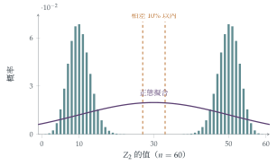

STEP II 2023，第 11 題
繼續之前，請先閱讀題目（原題為英文）。題目載於 OCR 提供下載的 2023 年 STEP 試卷（zip 檔案）內的 STEP II 試卷： www.ocr.org.uk/Images/707102-2023-past-papers.zip
引子
怎樣才能知道有多少比例的學生曾在考試中作弊，或者有多少比例的僱員曾偷取公司財物？直接問的話，很多人都會說謊。1965 年，統計學家 Stanley Warner 想出了一個巧妙的解決辦法：隨機化回答（randomised response）。每個人私下擲一枚硬幣或一顆骰子，由結果決定他是如實回答那條敏感問題，還是回答與之相反的問題。訪問員永遠不知道是哪一種情況，所以任何一個人的答案都不足以成為對他不利的證據；然而，由於隨機化的概率（probability）是已知的，整體的比例仍然可以估計出來。
本題探討的正是這背後的數學。讓每個人獨立地（independently）隨機化（第 (ii) 部分），所得的總數性質良好，足以確定該比例。用同一次擲硬幣為所有人隨機化（第 (iii) 部分），所得的總數雖然平均值（mean）相同，分佈（distribution）卻截然不同，呈雙峯形狀，幾乎不能告訴我們任何事。隨機性放在哪裏，至關重要。
動筆之前
\(Y\) 以概率 \(p\) 等於 \(X_1\)，以概率 \(q\) 等於 \(X_2\)。\(\mathrm{E}(Y)\) 是甚麼？\(\mathrm{E}(Y^2)\) 又是甚麼？
以選中哪一個變量為條件，可得 \(\mathrm{E}(Y) = p\mu_1 + q\mu_2\)，以及 \(\mathrm{E}(Y^2) = p\,\mathrm{E}(X_1^2) + q\,\mathrm{E}(X_2^2) = p(\sigma_1^2 + \mu_1^2) + q(\sigma_2^2 + \mu_2^2)\)。
逐步解題
階段 1 混合分佈的方差
\[\mathrm{Var}(Y) = p(\sigma_1^2 + \mu_1^2) + q(\sigma_2^2 + \mu_2^2) - (p\mu_1 + q\mu_2)^2.\] 含 \(\mu\) 的各項為 \(p\mu_1^2 + q\mu_2^2 - p^2\mu_1^2 - 2pq\mu_1\mu_2 - q^2\mu_2^2 = pq\mu_1^2 + pq\mu_2^2 - 2pq\mu_1\mu_2\)，當中用到 \(p - p^2 = pq\) 和 \(q - q^2 = pq\)。因此 \[\mathrm{Var}(Y) = p\sigma_1^2 + q\sigma_2^2 + pq(\mu_1 - \mu_2)^2. \qed\] 混合分佈（mixture）的方差（variance），等於各成分內部方差的平均，再加上各成分平均值之間的方差。
階段 2 獨立隨機化
\(\mathrm{P}(B = 1)\) 是多少？\(B\) 的 \(n\) 個值是否獨立？
\(\mathrm{P}(B = 1) = \frac12\cdot\frac16 + \frac12\cdot\frac56 = \frac12\)。這 \(n\) 個值互相獨立，每個的成功概率都是 \(\frac12\)，所以 \(Z_1 \sim \mathrm{B}(n, \frac12)\)，其平均值為 \(\frac n2\)，標準差（standard deviation）為 \(\frac{\sqrt n}{2}\)。
與平均值相差不超過 \(10\%\)，即是 \(|Z_1 - \frac n2| < \frac{n}{20}\)。以標準單位表示，這就是 \(|Z| < \frac{n/20}{\sqrt n/2} = \frac{\sqrt n}{10}\)，而此值趨向無窮大，所以該概率趨向 \(1\)。■
階段 3 所有人共用一枚硬幣
現在只擲一次硬幣，便決定全部 \(n\) 顆骰子的情況。已知擲得正面，\(Z_2\) 的分佈是甚麼？已知擲得反面呢？試用第 (i) 部分的結果。
已知擲得正面，\(Z_2 \sim \mathrm{B}(n, \frac16)\)：平均值為 \(\frac n6\)，方差為 \(\frac{5n}{36}\)。已知擲得反面，\(Z_2 \sim \mathrm{B}(n, \frac56)\)：平均值為 \(\frac{5n}{6}\)，方差為 \(\frac{5n}{36}\)。在第 (i) 部分取 \(p = q = \frac12\)，得 \[\mathrm{E}(Z_2) = \frac n2, \qquad \mathrm{Var}(Z_2) = \frac{5n}{36} + \frac14\Bigl(\frac{4n}{6}\Bigr)^2 = \frac{5n}{36} + \frac{n^2}{9}.\]
大部分的概率集中在哪裏？在平均值 \(\frac n2\) 附近的概率多嗎？
\(Z_2\) 有兩個峯，分別在 \(\frac n6\) 和 \(\frac{5n}{6}\) 附近，每個峯的闊度約為 \(\sqrt n\)（圖 13.5.1），而兩峯之間幾乎甚麼都沒有。具有相同平均值和方差的正態分佈（normal distribution）則只有一個峯，中心位於 \(\frac n2\)，正正是 \(Z_2\) 幾乎從不出現的位置。要 \(Z_2\) 與 \(\frac n2\) 相差不超過 \(10\%\)，一個服從 \(\mathrm{B}(n, \frac16)\) 或 \(\mathrm{B}(n, \frac56)\) 的變量必須落在 \([0.45n, 0.55n]\) 之內。對 \(\mathrm{B}(n, \frac16)\) 而言，這比其平均值高出至少 \(0.28n\)，約為 \(\frac{0.28n}{0.37\sqrt n} \approx 0.75\sqrt n\) 個標準差，所以該概率趨向 \(0\)；\(\mathrm{B}(n, \frac56)\) 的情況亦類似。■

回顧
以隱藏的選擇為條件。混合分佈的平均值和方差，都是以選中哪一個成分為條件而求得的。
內部方差加上組間方差。額外的一項 \(pq(\mu_1 - \mu_2)^2\) 量度了兩個成分之間的離散程度。
平均值和方差並非全部。\(Z_2\) 與 \(Z_1\) 的平均值相同，但形狀完全不同。
背後的數學
隨機化回答
在 Warner 的方案中，每位受訪者私下作出選擇，以概率 \(p\) 回答「你是否屬於 \(A\) 組？」，以概率 \(1 - p\) 回答「你是否不屬於 \(A\) 組？」。若屬於 \(A\) 的人所佔比例為 \(\pi\)，則答「是」的概率為 \[\lambda = p\pi + (1 - p)(1 - \pi),\] 因此由觀察所得答「是」的比例 \(\hat\lambda\)，我們可以估計 \(\hat\pi = \frac{\hat\lambda - (1 - p)}{2p - 1}\)（前提是 \(p \neq \frac12\)）。本題第 (ii) 部分正是這種情況，由每個人自己的骰子來決定。私隱的代價是精確度：除以 \(2p - 1\) 會令方差增大，所以隨機化調查所需的受訪者比直接調查更多。不過每個人都是獨立地隨機化的，所以大數定律（law of large numbers）能夠發揮作用。第 (iii) 部分顯示了共用隨機化時會出甚麼問題：那一枚硬幣所帶來的不確定性，永遠不會被平均抵銷。
差分私隱
隨機化回答是差分私隱（differential privacy）的前身。差分私隱是 Cynthia Dwork 及其同事於 2006 年提出的一個關於私隱的數學定義：如果加入或移除任何一個人的數據，只會令任何輸出的概率改變至多一個很小的倍數，該程序便算是保障私隱的。科技公司用它來收集使用統計數據，美國人口普查局亦在 2020 年人口普查中採用了它，在公佈的數字上加入經仔細校準的隨機雜訊，令任何個人的答案都無法被還原。
第 (i) 部分的恆等式是全方差定律（law of total variance）的一個特例：\(\mathrm{Var}(Y) = \mathrm{E}\bigl(\mathrm{Var}(Y \mid C)\bigr) + \mathrm{Var}\bigl(\mathrm{E}(Y \mid C)\bigr)\)，其中 \(C\) 是隱藏的選擇。它是方差分析（analysis of variance，ANOVA）的基礎。方差分析由費雪（Ronald Fisher）於 1920 年代在 Rothamsted 為農業實驗而引入，它把農作物產量的變異分拆為兩部分：可由肥料或品種解釋的部分，以及未能解釋的部分。
思維技巧
平均值和方差能很好地描述單峯分佈，但對混合分佈卻可能造成嚴重誤導。要問一問：概率實際上落在哪裏。
在大學裏，混合模型（mixture model）用來描述由幾個羣組組成的總體，而全方差定律則是統計學的標準工具，從調查設計到階層模型（hierarchical model）都會用到。
延伸練習
雙胞胎。試做 STEP II 2005，第 12 題。這其實是一道喬裝了的隨機化回答謎題：在甚麼情況下，一個答案完全不能透露硬幣的結果？
估計 \(\pi\)。在一項 \(p = \frac34\) 的 Warner 調查中，有 \(400\) 人作答，其中 \(160\) 人答「是」。試估計 \(A\) 組所佔的比例 \(\pi\)，並求出你的估計值的近似標準誤差（standard error）。
全方差。設 \(C\) 為取多個值的離散隱藏變量，證明全方差定律。
共用硬幣。在第 (iii) 部分中，\(Z_2 > \frac n2\) 的概率是多少？試解釋為何當 \(n\) 很大時，這個概率接近 \(\frac12\)，儘管 \(Z_2\) 幾乎從不接近 \(\frac n2\)。
延伸閱讀
Stanley Warner, “Randomized response: a survey technique for eliminating evasive answer bias”，Journal of the American Statistical Association 60 (1965)。
Cynthia Dwork & Aaron Roth, The Algorithmic Foundations of Differential Privacy（可於網上免費閱讀）。現代理論；開首幾章不難讀懂。
David Spiegelhalter, The Art of Statistics（Pelican），談調查及其陷阱。